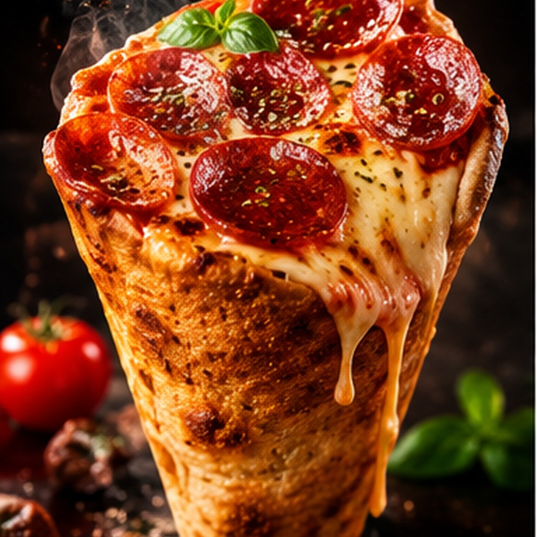
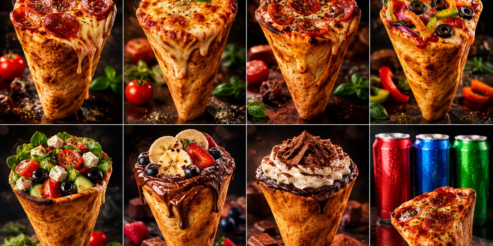

CLASSIC KONO
PEPPERONI
Mozzarella, tomato sauce & pepperoni.
Italian-inspired pizza in a hand-held cone — made for flavour, built for movement, and impossible to forget.

Choose the experience first, then connect the live ordering platform when this concept goes into production.
The signature cone format turns pizza into a portable experience — easy to hold, easy to eat and built to stand apart from a standard takeaway.
Kono Pizza Ireland's public story includes a mobile event operation and a portable format suited to festivals, weddings and corporate occasions.
CATERING ENQUIRY →Kono's Irish story has included Dublin locations and mobile events. Verify current store details and opening hours before production launch.
Delivery / collection journey